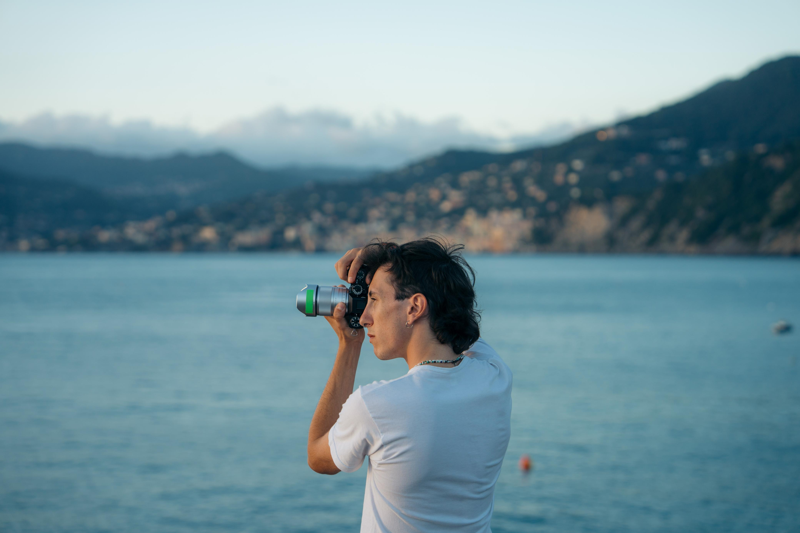

LORENZO
FILIPPINI
Selected Projects.
Una selezione di progetti, immagini e storie raccontate attraverso la videocamera.
Behind the lens.

Tutto è iniziato a sedici anni, con una videocamera tra le mani e la voglia di raccontare storie attraverso le immagini.
Da allora, quella curiosità si è trasformata in un percorso fatto di incontri, sperimentazione e diverse decine di progetti, ognuno capace di lasciare qualcosa e di aprire nuove prospettive.
La mia formazione parte dalla grafica e dalle telecomunicazioni, per poi trovare una direzione sempre più precisa nel mondo dell’audiovisivo, attraverso una qualifica professionale come Tecnico di Produzione Video presso l’Istituto di Alto Perfezionamento Musicale di Saluzzo.
Negli anni ho avuto l’opportunità di esplorare il mondo della produzione da prospettive differenti: dietro la macchina da presa come operatore di camera in alcuni documentari, nel cuore dei set cinematografici come videomaker di backstage, nella creazione di contenuti digitali e nella dimensione imprevedibile delle produzioni live, collaborando con Sky Italia, Spectra ed altri service.
Ma raccontare attraverso le immagini, per me, non significa soltanto girare un video. Significa osservare, cercare dettagli, entrare in contatto con realtà lontane dalla propria. È da questo desiderio che è nato anche un progetto fotografico dedicato alle strade di Mboro, un villaggio della Costa nord del Senegal: un racconto per immagini che ha attraversato i confini, diventando un’esposizione presentata in Normandia e in Svizzera.
Dal cinema alla fotografia, dai documentari alle produzioni commerciali, ogni esperienza è un’occasione per esplorare nuovi linguaggi e nuovi modi di guardare il mondo.
Perché prima ancora di raccontare una storia, bisogna imparare a vederla.